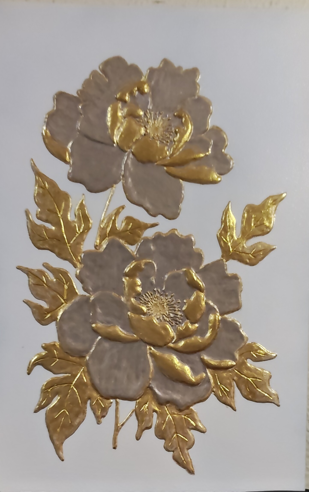

NICOLETA FILIP ART
PEONIA DORADA
Composición floral en relieve formada por tres peonías en tonos marfil rosado, acompañadas de hojas y elementos vegetales en acabado dorado sobre un fondo blanco.
Sobre la obra
PEONIA DORADA presenta una composición floral vertical formada por tres peonías trabajadas en relieve.
Los pétalos combinan un tono marfil rosado con aplicaciones doradas, mientras que las hojas y los tallos se resuelven en acabado dorado sobre un fondo blanco.
Presentación artística
La composición presenta dos flores agrupadas en la zona inferior y una tercera situada en la parte superior.
Los pétalos presentan un aspecto volumétrico y combinan tonos marfil rosado con aplicaciones doradas. Las hojas y los tallos completan el conjunto mediante un acabado dorado.
Ficha técnica
- Año
- 2026
- Dimensiones
- 40 × 60 cm
- Soporte
- Madera
- Técnica
- Pasta de relieve, acrílico, pintura metalizada dorada y barniz protector.
- Categoría
- Floral
Si deseas recibir información sobre esta obra, puedes solicitarla directamente.
SOLICITAR INFORMACIÓN →